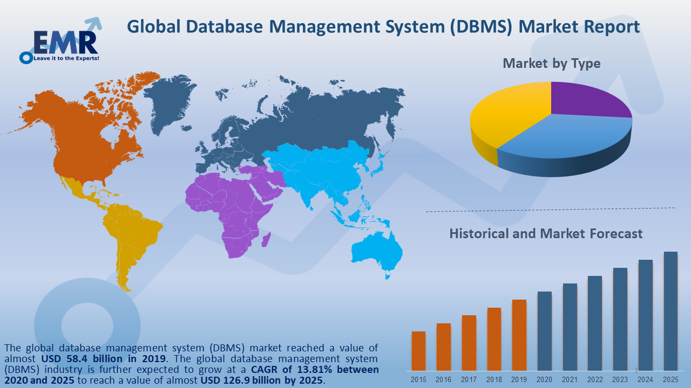

- AGOUA YAO ANGE ALEX
-

-

-


L'industrie mondiale des systèmes de gestion de bases de données (SGBD) est tirée par l'augmentation des données provenant des médias sociaux, du commerce électronique et des industries de haute technologie. Les marchés à maturité élevée sont l'Amérique du Nord, l'Europe occidentale et quelques pays d'Asie-Pacifique, dont l'Australie, la Chine et l'Inde. Les régions à maturité moyenne du marché sont l'Australie, la Corée du Sud et la Russie, tandis que les régions à faible maturité du marché sont la Colombie, le Japon, l'Autriche et la Slovaquie. L'émergence de nouveaux formats de données, le SGBD basé sur SaaS et le Big Data contribuent à la croissance du secteur pour le système de gestion de base de données. La base de données relationnelle est le premier type de SGBD, représentant près de 95% du marché. Le secteur devrait connaître une croissance saine dans les années à venir, tirée par une base de données open source, qui représente près de 25 à 30% de la consommation de bases de données relationnelles.
Les géants de l’IT dominent logiquement le marché DbaaS. Dans son Magic Quadrant 2020 consacré à la gestion de bases de données dans le cloud, Gartner place AWS, Microsoft, GCP, Oracle, SAP, IBM, Alibaba Cloud et Teradata dans la catégorie des leaders. AWS rafle d’ailleurs la palme du plus gros fournisseur de services SGBD en volume de chiffre d’affaires. GCP se distingue pour son approche hybride et ses partenariats, tandis que Microsoft mise sur un écosystème de produits qui séduit certains grands groupes, tel l’assureur Axa. IBM, Oracle et SAP s’appuient sur des solutions reconnues, mais doivent encore préciser leur message pour favoriser la transition de leurs clients vers le cloud, selon Gartner. Surtout, les offres de ces acteurs historiques — tout comme celles d’AWS — posent des questions de coûts et de gestion de licences.